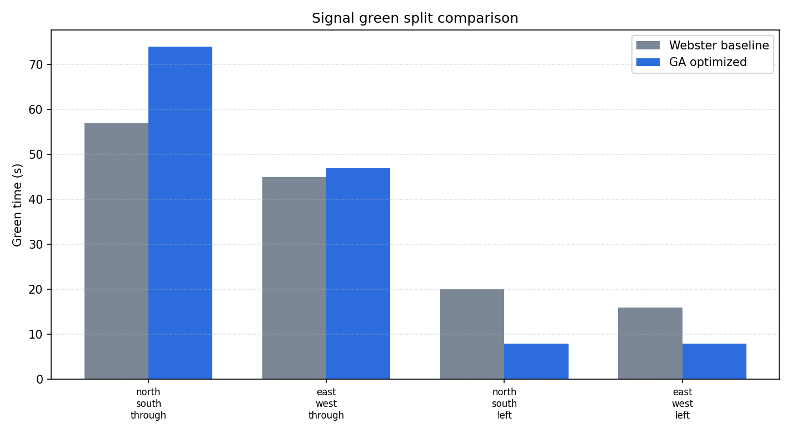

交通需求建模
定义南北直行、东西直行、南北左转和东西左转四个相位，并为每个进口设置交通需求、饱和流率和优先级。
Smart Intersection Signal Optimization
基于队列仿真与遗传算法的高峰期信号周期、绿信比分配优化项目
本项目模拟城市四进口交叉口在高峰期的交通运行状态，使用 Webster 固定配时作为基线方案，并通过遗传算法优化信号周期和各相位绿灯时间。系统能够自动生成排队曲线、指标对比图、遗传算法收敛曲线和 GIF 动图，用于展示优化前后的交通运行差异。
项目不依赖大型交通仿真平台，可以直接运行 Python 脚本生成实验结果，适合作为智能交通、优化算法和神经网络课程中的综合实践项目。
定义南北直行、东西直行、南北左转和东西左转四个相位，并为每个进口设置交通需求、饱和流率和优先级。
按秒推进车辆到达、排队和放行过程，统计平均延误、最大排队长度、通行率、停车次数和公平性。
将信号周期和绿信比分配编码为遗传算法个体，通过选择、交叉、变异和精英保留搜索更优配时方案。
自动输出优化前后指标对比、绿信比对比、收敛曲线、队列曲线和交叉口运行 GIF 动图。
src/smart_intersection_signal_optimization/
├── main.py # 命令行入口
├── scenario.py # 交叉口场景和 Webster 基线
├── simulator.py # 队列演化仿真与指标计算
├── optimizer.py # 遗传算法配时优化
├── visualization.py # 图片、图表和 GIF 生成
├── index.html # 汇报网页
├── style.css # 页面样式
├── script.js # 页面动画
├── assets/ # 运行结果图片和动图
└── tests/ # 单元测试cd src/smart_intersection_signal_optimization
python main.py运行后会在 assets/ 中生成实验图片、GIF 动图、指标 JSON、优化绿灯时间 CSV 和遗传算法收敛过程 CSV。
优化后系统会生成交叉口运行 GIF。动图中车辆队列随信号相位变化而缩短或增长，可直观看到不同进口道的排队压力。
Smart intersection signal optimization finished
Algorithm: elitist genetic algorithm
Baseline delay: 434.538
Optimized delay: 421.7
Delay reduction: 2.954%
Score reduction: 14.175%



不是只展示一个信号灯动画，而是将智能优化结果与 Webster 固定配时进行量化对比。
综合考虑平均延误、最大排队、通行率和停车次数，使优化结果更符合真实交通控制需求。
覆盖建模、仿真、优化、可视化、测试和网页汇报，形成完整课程项目结构。
后续可以接入 SUMO、CARLA 或真实检测器数据，也可以扩展为强化学习信号控制。